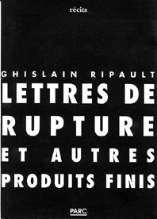

Lettres de rupture et autres produits finis Ghislain Ripault  120 pages - 12,20 E - ISBN 978-2-912010-09-8 ...Tu
sais que tu peux écrire un de leurs sacramentels romans cadencés, si
toi-même deviens suffisamment fictif, au bout d'un nombre de pages
variable la vie s'en mêle, alors les figurants décampent se faire
miroir ailleurs, chez d'aucuns & turlupins, sarl. Tu suis les
multiples courants qui basculent la mort sociale, la mort à ficelles de
l'histoire des épouvantails. Tu suis ce que tu traînes dans les mauvais
lieux. Tu n'as envie de rien prouver. Juste éprouver. Ce qui compose et
disloque, ce qui arrache et comble, ce qui fait émerger les formes et
les concasse, ce qui creuse l'aisselle de la terre sous l'épaule du
désir, parfois, ce qui puise et endigue, tout ce balancement
ingouvernable de la solitude et du peuplement. Tu es un drôle de type
avec son journal de bord des précipices, la tête entre les os.
Comprenne qui veut y aller voir, penché sur ses abîmes élastiques...
Après des études de philosophie à Nanterre et trois ans d'enseignement au Maroc (1968-1971), Ghislain Ripault mène des activités de revuiste, d'écrivain et d'éditeur, une centaine d'auteurs publiés, en particulier en littérature étrangère (ses dernières découvertes : le Philippin Francisco Sionil José, le Vénézuélien Arturo Uslar Pietri).  |